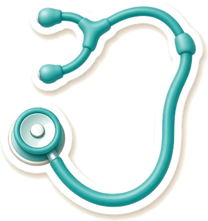
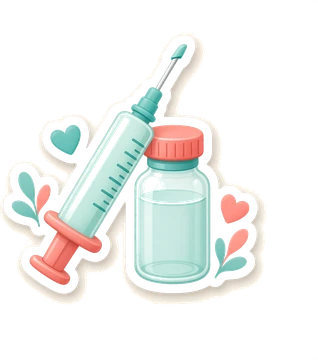
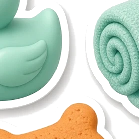
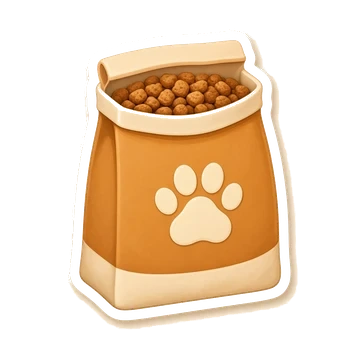
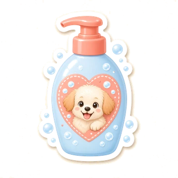

Consulta
Tempo para ouvir o tutor.




Avaliação clínica para o dia a dia do pet — orientação clara para o tutor.
R. Mathias Velho, 640 — Centro, Canoas/RS · clínica e casa de ração
Tempo para ouvir o tutor.
Calendário sem susto.

HigienePele e humor do pet.
Indicação no balcão.
WhatsApp (51) 98621-8718 · Tel (51) 3464-4942
Mapa sob demanda.
Ilustrações originais desta prévia — não são fotos do estabelecimento